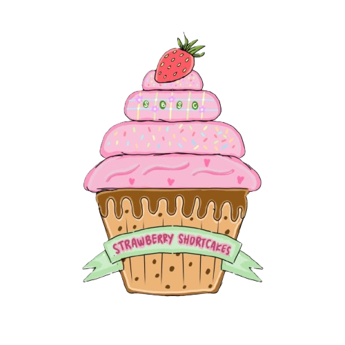

🍓 Makna Filosofis Logo Strawberry Cupcake 🧁 Logo Strawberry Cupcake mengusung tema sweet, cute, and creative yang mencerminkan kreativitas, kekompakan, dan semangat kelompok dalam menjalankan tugas kewirausahaan. Setiap komponen dalam logo memiliki makna filosofis sebagai berikut.
| 🧁 Cupcake: Melambangkan kreativitas dan inovasi kelompok dalam menciptakan ide serta mengembangkan usaha. | 🍰 Empat lapisan cupcake: Melambangkan empat anggota kelompok yang memiliki peran dan tanggung jawab masing-masing. Susunan lapisan yang bertumpuk menggambarkan kerja sama, kekompakan, dan kontribusi setiap anggota dalam mencapai tujuan bersama. | 🍬 Beragam topping pada krim: Melambangkan setiap anggota kelompok memiliki keunikan, karakter, dan ciri khas masing-masing. Perbedaan tersebut kemudian dipadukan menjadi satu kesatuan yang harmonis, menciptakan keindahan dan nilai tersendiri, serta memperkaya kreativitas kelompok dalam mencapai tujuan bersama. | 🍓 Stroberi merah: Melambangkan semangat, keberanian, dan keunikan kelompok dalam mengembangkan ide usaha. |
|
✨ Kesimpulan
Secara keseluruhan, logo Strawberry Cupcake menggambarkan kreativitas, kerja sama, dan semangat kewirausahaan. Empat lapisan cupcake menjadi simbol kekompakan empat anggota kelompok, sedangkan beragam topping mencerminkan keunikan setiap anggota yang berpadu menjadi satu kesatuan harmonis. Perpaduan warna pink dan cokelat muda mencerminkan kreativitas serta keceriaan. Dengan dukungan setiap anggota, kelompok diharapkan mampu mengembangkan ide-ide kreatif, menjalankan tanggung jawab dengan baik, dan mencapai tujuan bersama. 🤎🍓
|
|||